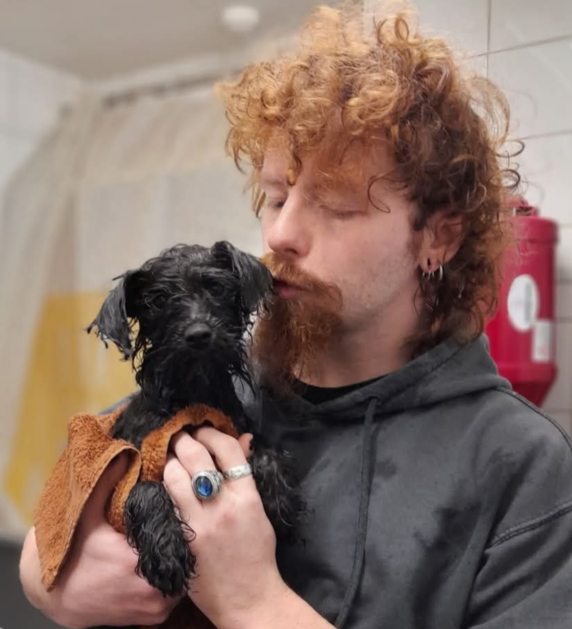

My name is Leon Campbell and I offer dog grooming services from a salon in Lisburn, including pickups & drop offs. Though I plan to go mobile from a van in 2027.
I am a fully insured certified professional groomer as recognised by the IPG, qualified in pet CPR as well as first aid. I think this kind of training is crucial in the event of an emergency.
I have over 2 years experience in dog grooming industry. In that time I have learned many styles and even cultivated some of my own.
I've lived with an array of different breeds throughout the years. From Jack russels that rule the school, Labradors that eat, sleep, get the zoomies and repeat and even crazy Collies that never ran out of time to have fun- needless to say I know a thing or two about dog behavior.
